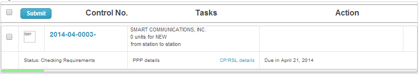
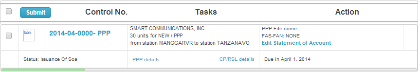
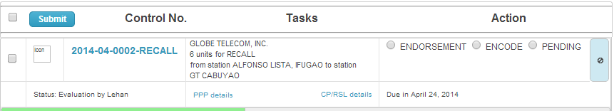
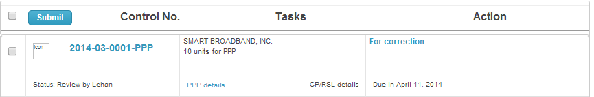
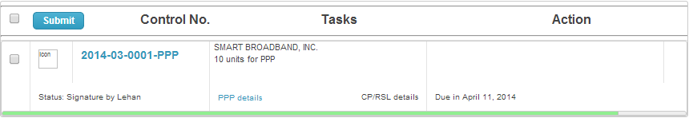

Engineer¶
About NAFD Engineer Job Description:
NAFD Work flow¶
ID Task Engineer 1 Checking requirements 2 Issuance of SOA 3 Payment 4 Evaluation 5 Endorsement 6 Encoding 7 Review 8 Signature 9 Chief Signature 10 Director Signature 11 Cashier Stamp 12 Release to Secretariat

Checking requirements¶
This is a segment in work flow to verify the completeness of the application filed by the clients.
Once you are done click the check box and press submit button.

{kind=link}
Issuance of SOA¶
This is a segment in work flow to issue an order of payment or statement of account to the requesting applicant.
Note
Information stated in this segment will be reflected to Logbook details such as total number of units, station, first station, last station, transaction type and service type.
This section describe how to Upload SOA. If you already uploaded the SOA, attach the SOA control no in Logbook page by clicking Logbook Control No.
Once you are done uploading SOA click the check box and press submit button.

{kind=link}
Evaluation¶
This is a segment in work flow responsible for evaluating application if it is for endorsement, for encoding or for pending.
Options:
- Endorsement
- if the next process is endorsement please upload the letter of endorsement.
- Encoding
- when all requirements are attached and ready for encoding.
- select Encoder to process the application.
Option:
- Re-assign
- After assigning an Encoder and in the process of Encoding, Engineer has option to select other available Encoder.
- Pending
- this will be selected if the applicant fail to comply the requirement after accepting the application.
- state the reason why the application is in this situation
Once you are done selecting the next process click the check box and press submit button.

{kind=link}
Endorsement¶
{kind=link}
Review¶
This is a segment in work flow responsible for reviewing the printed and uploaded application.
Option:
- For Correction
- the process to return the printed and the uploaded application for re-encoding due to correction.
Once you are done verifying both printed and uploaded information, click the check box and press submit button.

{kind=link}
Signature¶
This is a segment in work flow where assign Engineer approved the printed documents.
Once you are done signing the printed documents click the check box and press submit button.

{kind=link}
Upload SOA¶
Instruction how to upload Statement of Account from MS-Excel file.
Click the Create Statement of Account found in Action column. This will forward the page to Adding Statement of Accounts.
- Fill up the necessary information such as:
- Statement of Account Control No.
- If New:
- leave blank if your creating new entry.
- If Old:
- indicate original Control No. if your editing the already assigned SOA control no.
Note
SOA Control No. format (e.g. 2014-01-8888): ‘year - month numerical value - four digit counter‘. The counter will automatically reset to 0 everyone month.
Date Issued
Public Telecom Entity
Application Type
Service
Validity from
Validity to
Then click Save button once done. The supplied information will serve as the header and footer for SOA.
Hint
Import Details PPP~RSL and Import Details Demo~Dup is now shown.
Click the necessary button for your application. A pop-up window will appear with an Load data button.
Note
Import Details Demo~Dup is for uploading MS-Excel format for Demo or Duplicate application only. While Import Details PPP~RSL is for uploading Permit to Purchase/Possess, Construction Permit and Radio Station License order of payment.
Click the Load data button to select your MS-Excel pre-formated for SOA.
Caution
Please use the pre-formatted SOA to correctly upload the information.
Verify the data for completeness before checking “is good” box.
Click the Load data again to finalized the upload of information to the main page SOA.
Hint
Please check the last row on Sitename or Address of your MS-Excel file if it matches the uploaded last row in SOA details.
Click Save button once all information are properly supplied.
Hint
If you want to save then create new entry click Save and add another. If you want to save then continue working click Save and continue editing
{kind=link}